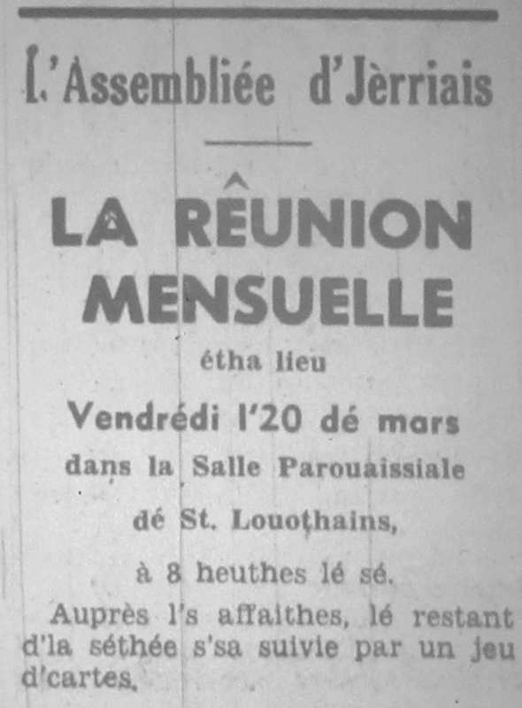

Eune septantaine dé membres lus rêunitent vendrédi, l'20 d'mars, dans la Salle Pârouaissale dé St. Louothians pour un jeu d'cartes.
Eune septantaine dé membres lus rêunitent vendrédi, l'20 d'mars, dans la Salle Pârouaissale dé St. Louothians pour un jeu d'cartes.
Lé rapport du discours du Dr. Albert Carré du mais d'févri fut liu et accepté. Quatre nouvieaux membres futent êlus et la correspondance fut liue.
Le Président dit qu'lé jeu d'cartes 'tait dans les mains du Député W. Tomes, maître dé cérémonies. À mié-séthée les danmes et mêssieux du Conmité Social sèrvitent un bouan souper comme tréjous, et à la fin Mde. Romeril présentit les prix ès gangnants tous des danmes.

Lé Président èrmercyit l'Député Tomes et san comité pour tout lus travas et l'Connêtabl'ye pour la salle, et annoncit qué la préchaine rêunion s'sa l'17 d'avri sans la Salle Pârouaissiale dé St. Sauveux - des filmes auve eune compétition à d'viner 20 pliaiches en Jèrri. L'excursion l'4 d'août à l'Île dé Witte - y'a acouo des pliaiches. Les membres intérêssis - vos pliait-i' donner vos noms au Sieur Richard pas pus tard qué l'15 dé mai.
1970
Viyiz étout: